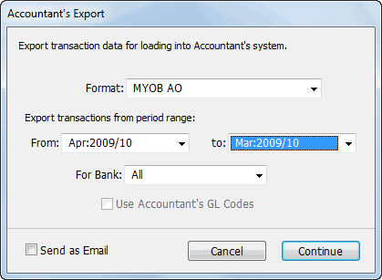
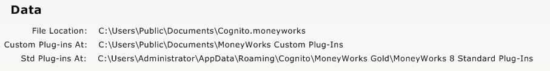
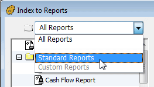
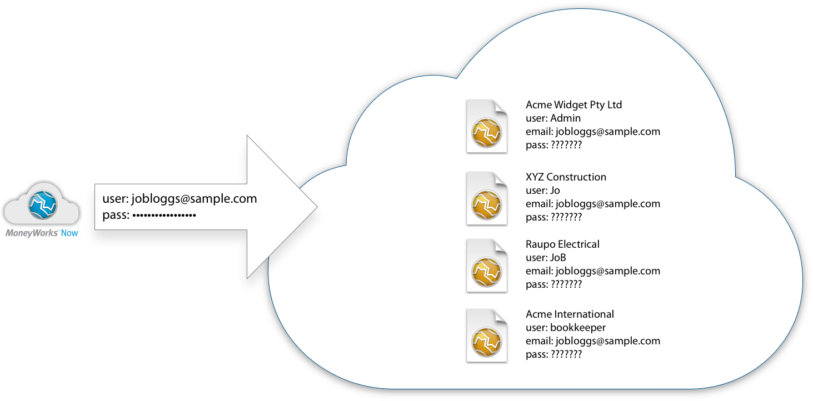
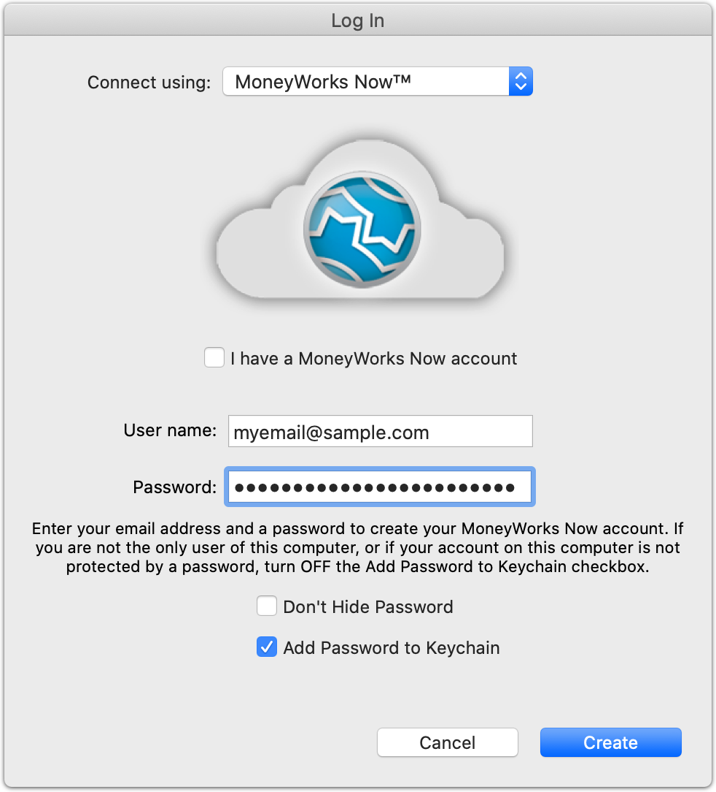
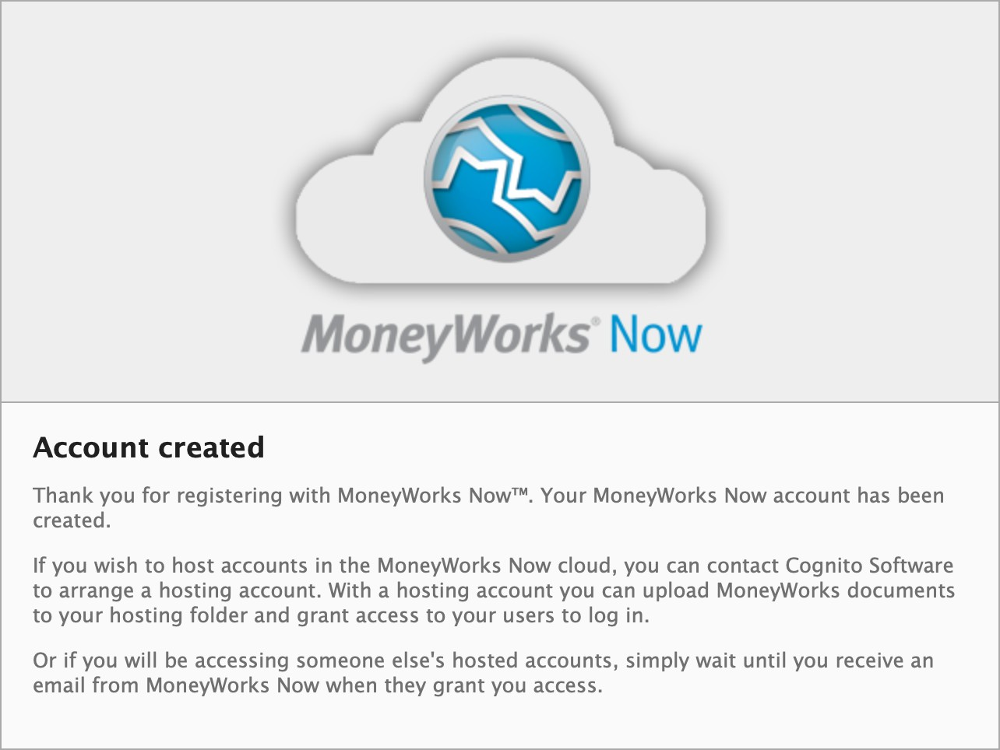
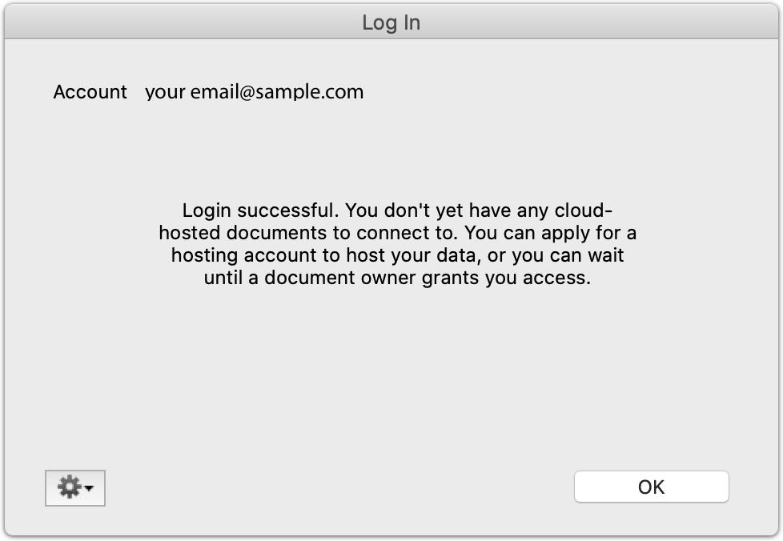
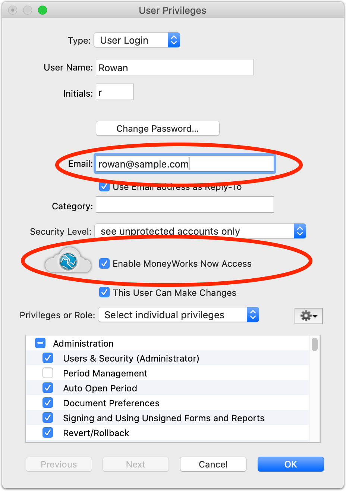
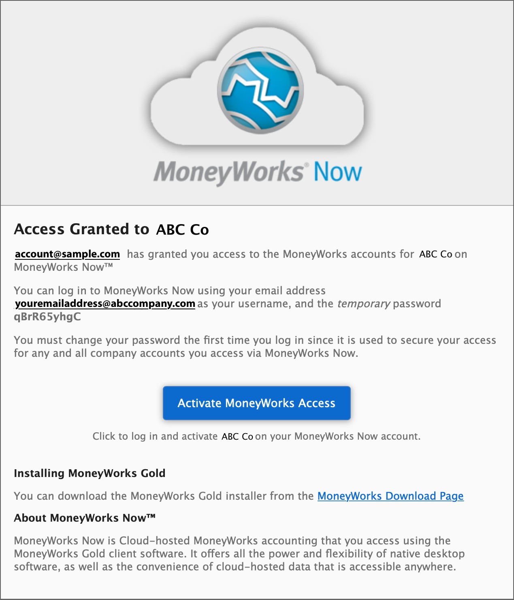
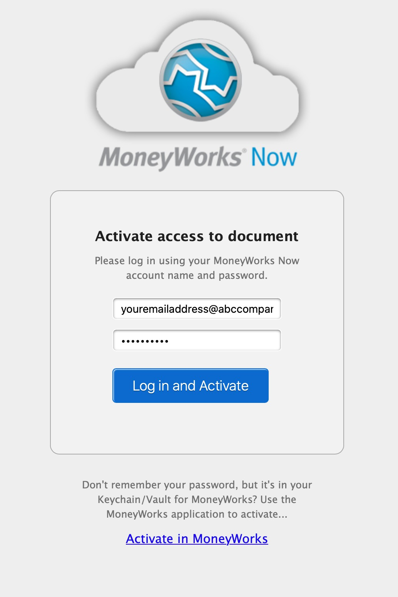

MoneyWorks documents can be run on both Windows and Macintosh platforms without any file conversion. Similarly custom reports and forms can be moved between platforms. However you will need to make sure that MoneyWorks can recognise the file as being a MoneyWorks file.
The easiest way to move your document is to make a backup of it using the Save a Backup As command, then move the backup to the other computer. The backup file will be double-clickable provided you have installed a copy of MoneyWorks on that machine.
Note: When you move reports or forms between computers, make sure that they are put into the Reports or Forms folder in the MoneyWorks Custom Plug-ins folder of the destination machine. Scripts are platform dependent and cannot be moved.
Moving from Mac to Windows: You may need to add the appropriate Windows file extensions for the type of file you are transferring (see table). For example, a document called “My Accounts”, would need to be changed to “My Accounts.moneyworks”.
File Extension
MoneyWorks Document file .moneyworks
MoneyWorks Backup .mwgz
Custom Report .crep
Chain Report .rchn
Analysis Report .adf_
Invoice/Receipt Form .invc
Statement .stmt
Cheque/Remittance .remt
Product Labels .prod
Job Forms .job_
Context-free form (e.g. GST Guide Form) .rept Import Map .impo
Moving from Windows to Mac: The files you move will already have the Windows extension as part of the file name. Simply copy the files onto the Mac, start MoneyWorks and use the File>Open command to open the file. You will not be able to double click a Windows file until it has been saved from within MoneyWorks on the Mac.
Platform Issues: There are some basic differences between Macintosh and Windows that you need to be aware of in moving files between platforms.
Any MoneyWorks preferences (Fonts, keyboard settings etc.) are machine specific and are not transferred with the document.
Company Logos that are pasted into your MoneyWorks document may not be available if the document is moved to another platform. They will
however be preserved and re-appear if the document is moved back to the original platform.
The same fonts are not always available on both platforms (indeed, the same fonts may not be available on different machines of the same platform). If the font of the same name cannot be found on the new computer, another font will be substituted. MoneyWorks maintains a font substitution table for the common fonts, so that Helvetica on the Mac for example will map to Arial on Windows.
When fonts are substituted, the size of the characters will be different. This may mean that you have to resize your text elements in the form.
Pictures and graphics that you have pasted into a form may be lost when you move the form to a different platform (depends on format).
When you move a form or report from one platform to another you will need to reset the page layout for it.
Licencing Issues: Please remember that your copy of MoneyWorks is licenced to be used on only one machine, and hence cannot be loaded onto another.
Unless you are one of those people who do their entire accounting and statutory returns themselves, you will from time to time need to send information to your accountant. The easiest thing to do is to send them a backup copy of your MoneyWorks document—unfortunately this presupposes that they have MoneyWorks, and not all accountants have the necessary degree of enlightenment for this.
If your accountant just wants a report, you can simply print or email one directly. Typically they will be interested in the Trial Balance, Profit & Loss, and Debtors/Creditors reconciliation reports. They might also want a detailed breakdown of one or more accounts—use the Account Enquiry for this, printing out the movements from this screen, or, even better, highlight the required accounts in the Accounts list and click on the Ledger Report sidebar report.
You can also export your complete accounts in a format that is suitable for importing into the major accounting practice systems. To do this:
The Accountant’s Export settings window will open

If your accountant uses MoneyWorks, choose the MoneyWorks file format to create a backup copy of your accounts.
All posted transactions for the period range selected will be exported. This is not available for the MoneyWorks export option.
For Bank: If you just want to give your accountant details for a specific bank account, choose the account from the For Bank menu. Only posted transactions that used the nominated bank account will be exported. Note that some accountant’s systems, unused to dealing with more sophisticated programs such as MoneyWorks, expect a separate file for each bank account. If this is the case, it is not possible to transfer a lot of the information that is in MoneyWorks (such as your accounts receivable/
payable).
Note: If you choose the All Banks option, MoneyWorks will export any invoices as if your accounts payable and receivable accounts were bank accounts.
Use Accountant’s Codes: If you have stored your accountant’s codes in your chart of accounts, you can set the Use Accountant’s GL Codes to export your accounts with their codes instead of yours. This option is only available if the accountant’s code is set for all your accounts.
Send as Email: You can email the files directly to your accountant—MoneyWorks will make an email with the accountant’s files attached, and put in your Out box ready for sending the next time you go on line (you will still need to address the email).
Click Continue
You will be prompted for the file name and location. Make sure that you choose some sensible location for this on your hard drive so you can find the file again easily.
If you elected to email the file, your email program should appear with the newly created file as an attachment.
If you want multiple people to access your accounts simultaneously, you'll use a MoneyWorks Datacentre server.
But what if you just want a couple of people to have access to your accounts document from different computers but not at the same time? For example, you might want your accountant to be able to open your file and run off some reports when you're not using the accounts yourself.
You can achieve this simply and cost-effectively by keeping your accounts document in a shared Dropbox folder. Every time you save or close, the file will be mirrored to other computers that share the folder. However, in this scenario,
two people must not open the document at the same time. Otherwise you will end up with the dreaded Dropbox "(conflicted copy)" situation.
To help avoid this, MoneyWorks 8 and later will detect that a file is in a Dropbox shared folder and will create a semaphore file whenever you open it. This semaphore file will also be mirrored to other Dropbox users sharing the folder (provided they are connected to the internet). If they try to open your accounts document while the semaphore file is present, MoneyWorks will know that the document is in use elsewhere and will prevent it from being simultaneously used elsewhere.
Once again, if you want bulletproof shared access, that is what MoneyWorks Datacentre or MoneyWorks Now are for.
MoneyWorks takes great pains to preserve the integrity of your data. However from time to time the unexpected happens. If your document starts behaving oddly, check it out with the diagnostics.
The diagnostics window will open.
The diagnostics will run—a summary is displayed as the diagnostics progress.
If a fault is found, please contact Cognito Software technical support to ascertain what (if anything) can be done. Note that you may have to revert to an older backup copy of your file. It is therefore important not to destroy these by taking a backup of the (possibly) damaged file.
Because MoneyWorks remembers the last printer (and settings) you used for each report/form, it can get confused when you change computers/printers and the drivers are not compatible. Clicking Clear Printer Settings removes all print settings for the document (i.e. for hardcoded “reports” like bank rec summary etc), and may solve driver-induced printing issues.
In MoneyWorks you can store your company logo in the Company Details
screen. Express and Gold allow you to place graphics onto Forms.
If possible you should use a common bitmap graphic format such as PNG, JPG, as these are supported on both platforms. So if you add a PNG on Mac, it will be visible on Windows.
MoneyWorks also supports PDF on Mac. Avoid using PDF graphics if your forms will be printed from Windows computers.
Managing Your Plug-ins
Reports and forms (invoice layouts etc) are provided as plug-ins, allowing you to share ones you have created with other users. To be seen by MoneyWorks they must be stored in the correct location (MoneyWorks will normally manage all this for you).
Standard Reports and Forms supplied as part of MoneyWorks reside in the MoneyWorks 9 Standard Plug-ins folder5. This is automatically made for you when you install MoneyWorks.
Reports and Forms that you create (or modify), as well as Pictures (item pictures or transaction images) reside in the MoneyWorks Custom Plug-ins folder. This will be automatically created for you when you first create a report or form, or you can make it in the Index to Reports (see Creating a Custom Plug-ins Folder). You can also access these folders from the Data section of the Housekeeping panel in Navigator, as shown below:

Note: It is important not to put forms/reports that you create into the Standard Plug-ins folder as MoneyWorks may over-write this when new versions are released. This will destroy the existing contents.
Note: The Custom Plug-ins folder contains four sub-folders, for holding Reports, Forms, Scripts and Import Maps.
On the Mac the Standard Plugins are created in the Application Support folder in the user domain:
~/Library/Application Support/Cognito/MoneyWorks Gold/MoneyWorks
9 Standard Plug-Ins
On Windows, they are created in the APPDATA folder, typically something like:
C:\Documents and Settings\USERNAME\Application Data\Cognito
\MoneyWorks Gold\MoneyWorks 9 Standard Plug-Ins
To locate the folder, click on the link in the Data section of the Housekeeping Navigator panel or use Reports>Index to Reports.
If you delete the standard plug-ins folder, MoneyWorks will recreate it.
If you update the MoneyWorks software, MoneyWorks may overwrite any of the standard plugins files with new versions without warning (so if you change any of these files the changes should be saved in Custom plugins).
If you do not want MoneyWorks to recreate the contents of the standard plugins folder, you may place an empty file at the top level of the Standard Plug-Ins folder called "No Standard Plugins". If MoneyWorks sees this it will not recreate standard plugins, even after a software update.
The location of this varies, depending on whether you are hosting MoneyWorks on your computer, or are connecting to another machine using Gold or Datacentre. To locate the folder for the currently open document, click on the link in the Data section of the Housekeeping Navigator panel or use Reports>Index to Reports.
For a local document:
In the same folder as the document
For a document you connect to on a Gold server:
In the same location as the standard plugins folder (see above) For a document you connect to on a Datacentre server:
If there is a custom plugins folder for the document on the server, it will automatically be downloaded to (Mac):
~/Library/Application Support/Cognito/MoneyWorks Gold/
<datacentre_name>/<subfolders>/MoneyWorks Custom Plug-Ins
or on Windows to:
C:\Documents and Settings\USERNAME\Application Data\Cognito\ MoneyWorks Gold\<datacentre_name>\<subfolders>\MoneyWorks Custom Plug-Ins
where <datacentre_name> is the name of the Datacentre server as set in its configuration page, and <subfolders> is the subfolder hierarchy (if any) that the document resides in within the Datacentre document root folder on the server.
Click the Make Custom Plug-ins button
This is only present if there is no custom plug-ins folder for the currently open file.
Note: MoneyWorks will automatically create the MoneyWorks Custom Plug-ins folder for you the first time you need it (e.g. saving a custom report or form).
The easiest way is just to click on the link in the Data section of the Housekeeping Navigator panel, but it can also be located using Reports>Index to Reports:

Set the pop-up menu at top left from All Reports toStandard Reports or Custom Reports
The selected folder will be revealed in the Finder (Mac) or Windows Explorer.
Choose Reports>Index to Reports
Set the pop-up menu at top left from All Reports to Custom Reports
Click the Remove Custom Plugins button
Confirmation will be requested. If you delete your local Datacentre Custom Plug-ins folder, a new copy will be downloaded from the Datacentre server the next time you connect.
1 Unless you have turned the Session file option off — see Enable Rollback and Crash Recovery, MoneyWorks will have kept a record of any changes you have made prior to the crash, and you will be able to recover most of the work done.↩︎
2 The maximum size for a MoneyWorks document is 4 Gigabytes.↩︎
3 If you do suffer a bout of amnesia and forget the password you will need to contact Cognito (assuming you can remember the phone number), who can, for a fee, remove the password for you.↩︎
4 On Windows, press Ctrl-P to print.↩︎
5 Prior to MoneyWorks 7, this was called MoneyWorks Standard Plug-ins↩︎
MoneyWorks Now™ is MoneyWorks hosted on our cloud servers. Your MoneyWorks Now account is your single sign-on for all of your cloud-hosted MoneyWorks documents.
If you have a group of companies, you can host them all, and access them all with the same MoneyWorks Now account.
If you are an accountant, you may access many different companies' accounts hosted in MoneyWorks Now, all through your one MoneyWorks Now login.

If you're just starting out, and are setting up your company in MoneyWorks with a view to using MoneyWorks Now, you will initially set up the company accounts in a local document on your computer (see Getting Started), and then you will upload that document to MoneyWorks Now when the initial setup is complete
— see Migrating a MoneyWorks Document into the MoneyWorks Now cloud
If you will be the Administrator for your cloud-hosting, you will need to first create your own MoneyWorks Now account. A MoneyWorks Now account name is always your email address.
The MoneyWorks Log In Screen will be displayed.
Set the Connect Using: popup menu to MoneyWorks Now™
Ensure that the I have a MoneyWorks Now account check box is turned off
Enter your email address and preferred password. Please use lower case for your email address.
Note: It is important that you use a stable email address. If possible don't use an ISP-provided email address, because you might change ISPs in the future. A company email address is preferred. You cannot change the account name.
By default, your password will be stored in the platform password manager (Windows Vault or Mac Keychain), and your computer will autofill it for you in MoneyWorks. You may turn off this option if you are not using your own computer when you set up your account, but be sure you do not forget your password.

You have now created your MoneyWorks Now account. You will receive a confirmation email. If you don't receive it within a few minutes, be sure to check your spam folder and mark it as being “not junk” and whitelist moneyworks.net.nz in your email system.

At this point you have successfully logged into MoneyWorks Now. Normally you would see a list of your MoneyWorks Now files, but as you have just created your account there will not be any files as yet.

Click the OK button. The Log In window will close and the MoneyWorks Welcome page will be displayed.
First, you will need a MoneyWorks Now hosting account, which will be attached to your email address. Contact Cognito to obtain this.
New company: If you are beginning with MoneyWorks and have not yet set up your accounts, you will create and set up a company accounts document on your local computer (this can be done with the MoneyWorks Gold trial1). When you are ready to have it hosted and shared, you will upload it to your MoneyWorks Now hosting account.
Existing company, single user — Gold, Express, or Cashbook: If you are already using MoneyWorks in single user mode, and migrating to the cloud you won't need to create a new file. If you have been using Express or Cashbook, you will need to install the MoneyWorks Gold trial2 to use MoneyWorks Now.
Existing company, network user: If you are already using MoneyWorks with a private Datacentre server, you will first need to get access to your .moneyworks file and its Custom Plugins folder, so that you can open the document directly. If you don't have filesystem or physical access to your existing server, you can log into your MoneyWorks file and save a backup to your local hard disk (using File > Save a Backup As, and choose Accounts Backup with Custom Plugins and Attachments as the backup type). Open the backup and restore it and then
proceed.
Note: This must be a unique name. You cannot have two data files with the same company name in MoneyWorks Now.
If not already password-protected, click Password-protect “your document name”.
The Password Control window will open. You need to be an admin user for the document to access this command. If you are just now enabling password protection, then you will be the Master Admin user with default username "Admin".
Click OK.
Click Upload to Server
You will be asked to log in to MoneyWorks Now.
Ensure the I have a MoneyWorks Now account option is on, and fill in your MoneyWorks Now account name and password.
Click Log In
A list of your hosting locations will be displayed (usually only one, unless you're an accountant).
Don't see any hosting locations?
Have you set up hosting with Cognito?
Have you activated your hosting by clicking the link in your hosting confirmation email?
Your document (and its MoneyWorks Custom Plug-Ins folder, if one is present), will be uploaded to the server. MoneyWorks Now login access to the document is automatically granted to you. You can now invite others to access the document.
Make sure you close and archive the document you have just uploaded to ensure you or your other users, if any, do not accidentally open and work on this local document. You may also wish to delete the MoneyWorks recent document list to ensure you do not accidentally open the old document. Choose File > Open Recent > Clear Menu to do this.
Choose File > Users and Security
Either open an existing user or create a new user for the document
Fill in the user's email address
If you know that the person has a MoneyWorks Now account with a particular email address, use that. If they do not already have a MoneyWorks Now account, one will be created using the email address you enter.
Turn on Enable MoneyWorks Now Access

Click OK
An activation email will be sent to the person at the given email address. They should follow the instructions in the email to activate their access.
For an existing user, their password, if any, will be replaced in the document with a new password (they do not need to know this, as they will never use it). Their access will be enabled via their MoneyWorks Now account. If the document is ever removed form MoneyWorks Now and used locally or on a private Datacentre server, you will need to obtain the password from the MoneyWorks gateway API.
If someone else is administering your MoneyWorks Now accounts, they may invite you to a document as described above. This will send you a notification email, and also automatically create a MoneyWorks Now account for you (unless you already have one). In this situation, you will receive a one-time password which you will change to your own chosen secure password when you
first log in using MoneyWorks Gold.

When you receive this email click the Activate MoneyWorks Access button. A web page will open where you can complete the activation. If a MoneyWorks Now account has just been created for you, with a one-time password, that should be autofilled for you. If not, just copy and paste from the email (but on Windows, make sure you are not inadvertently copying the space following the password in the email). If you already had a MoneyWorks Now account created, just enter your MoneyWorks Now password and complete the activation.

If you are new to MoneyWorks and MoneyWorks Now, follow the download link in the email to download and install MoneyWorks Gold.
You can now access the document by logging in via MoneyWorks Gold.
Choose Connect Using: MoneyWorks Now™
Click Log In
If this is the first time you have logged in with MoneyWorks Now with an auto-created account, you will be required to change your password.
MoneyWorks Services, Support and Maintenance